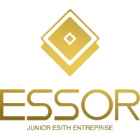

Industrial Engineering · Machine Learning · MLOps
I build systems that keep working after the notebook closes.
Industrial Engineering student at ESITH Casablanca, majoring in Business & Data Management. I work where analysis becomes infrastructure — orchestrated retraining, model registries, served predictions, and automated operations that run without supervision.
01 — About
Two disciplines, one workflow
My degree sits between industrial engineering and data: supply chain and operations on one side, machine learning and information systems on the other. A CPGE MPSI/MP background came before it. That combination is why I gravitate toward MLOps rather than modelling alone — a forecast is only useful once it is scheduled, monitored, and trusted by the people acting on it.
In practice I build closed loops: pipelines that detect their own degradation and retrain, APIs that expose predictions to the systems that need them, and automation that removes manual steps from a business process end to end. I use LLMs as components rather than demos — the Claude API doing document screening inside production services. I also write technical guides on machine learning mathematics and applied GenAI, published on LinkedIn.
02 — Focus
What I work on
MLOps & Pipelines
Airflow orchestration, MLflow tracking and registries, drift detection, containerized deployment.
Applied Machine Learning
Forecasting and anomaly detection with XGBoost and scikit-learn, feature engineering, evaluation.
Process Automation
REST APIs driving no-code workflows, email and document pipelines, LLM-assisted screening.
Operations & Strategy
Supply chain and inventory optimization, KPI design, market analysis and strategic frameworks.
03 — Selected work
Projects
Smart Supply Forecaster
MLOpsClosed-loop continuous-training pipeline for retail demand forecasting. Airflow triggers scheduled retraining, MLflow versions and promotes models only when they beat the incumbent on RMSE, FastAPI serves predictions, and a Streamlit dashboard tracks drift. Fully containerized, with tests running in CI.
Athena Core
Decision supportEnterprise decision-support platform built in four analytical layers: descriptive KPIs, advanced segmentation and trend analysis, strategic frameworks, then AI modules for sales prediction, anomaly detection, recommendations, and a strategy assistant.
Recruitment Operations Platform
Client work · privateEnd-to-end automation of a hiring workflow: candidate and offer data model, a REST API driving no-code automations for interview invitations and follow-ups, inbound email parsing over IMAP, Claude-assisted CV screening and document generation, templated PDF reports, and live dashboard updates over WebSockets. Hardened authentication, 38 of 38 end-to-end tests passing.
AI Compass
Web platformPlatform for evaluating and comparing AI models: interactive benchmark comparisons across MMLU, HumanEval and GSM8K, live data visualizations, and production-grade cost analysis.
ContinuumSC
Supply chainMLOps intelligence platform for continuous supply-chain operations — automated demand forecasting paired with interactive inventory optimization under service-level constraints.
04 — Experience
Where I have worked

Lead of the Prospecting Unit
Previously Junior Consultant, October 2024 to June 2025.
Assistant Process Engineer
- Analysed industrial operations to identify data-driven optimization opportunities.
- Contributed to a rock classification project, exploring machine learning approaches.
Forward Program Participant
Selected for a global learning initiative on leadership, structured problem-solving and communication.
05 — Résumé
Education & skills
Education
- ESITH Casablanca Industrial Engineering — Business & Data Management major
- CPGE — Acharif Al Idrissi Center, Taza Mathematics, Physics & Engineering Sciences (MPSI–MP)
- Lycée Moulay Ismail Baccalauréat, Mathematical Sciences B
Skills
Languages
Python, TypeScript, SQL, R, LaTeX
Machine learning & data
scikit-learn, XGBoost, pandas, NumPy, SciPy, statsmodels, Plotly
MLOps & backend
Docker, Airflow, MLflow, FastAPI, Express, PostgreSQL, MongoDB, Streamlit
GenAI & automation
Claude API, LangChain, Ollama, n8n, Gemini, KNIME
Web & tools
Next.js, React, Prisma, Tailwind, Git, Linux, Power BI
Spoken languages
French, English, Arabic
06 — Writing
Technical guides
Machine Learning Models
Jul 2025A LaTeX reference covering the core mathematics behind machine learning models.
Unlocking GenAI with LangChain
Aug 2025A practical guide to building applications with LangChain, from components to working chains.
Both published on LinkedIn.
07 — Contact
Get in touch
Open to internships and collaboration in machine learning engineering, MLOps and operations automation.